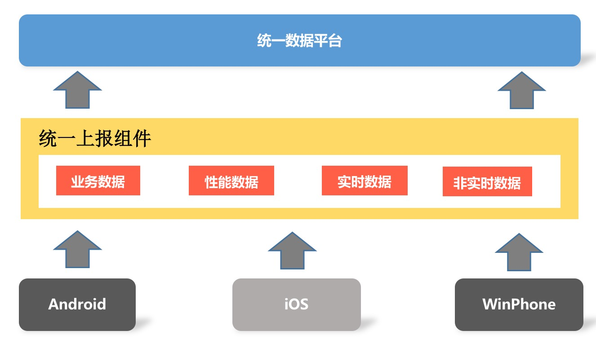
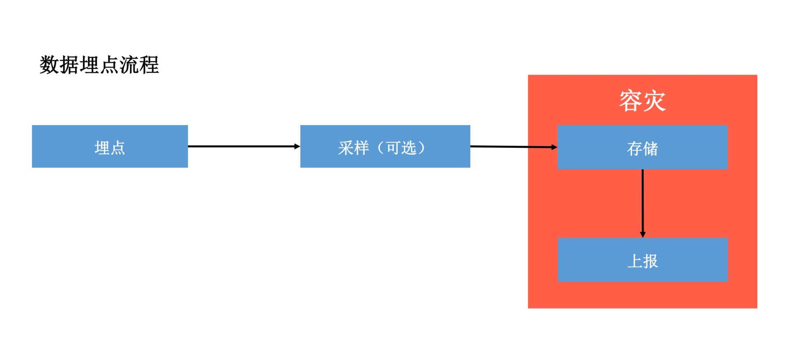
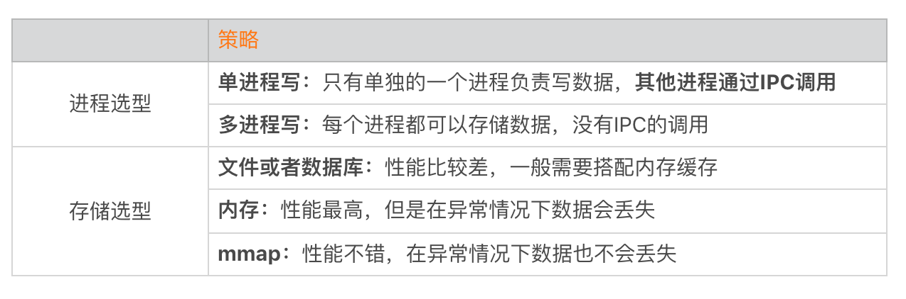
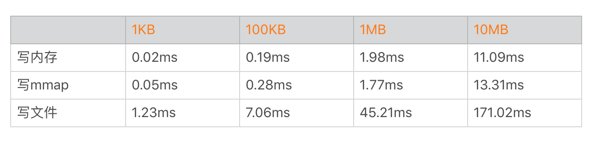
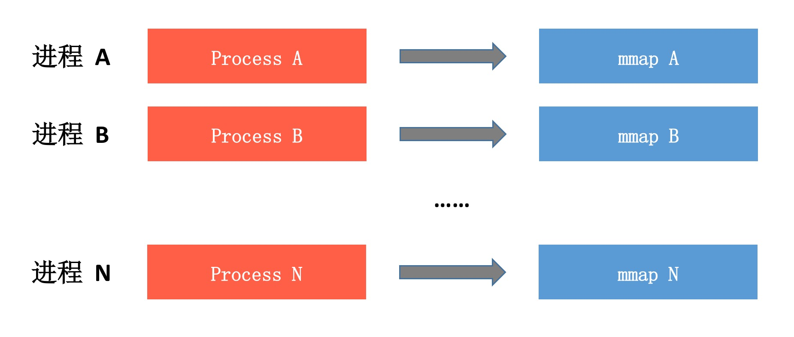
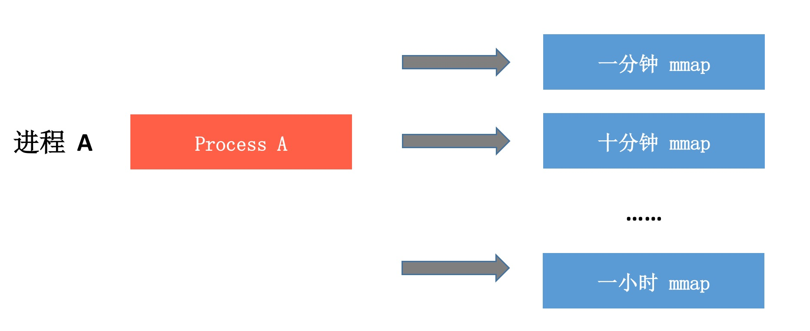
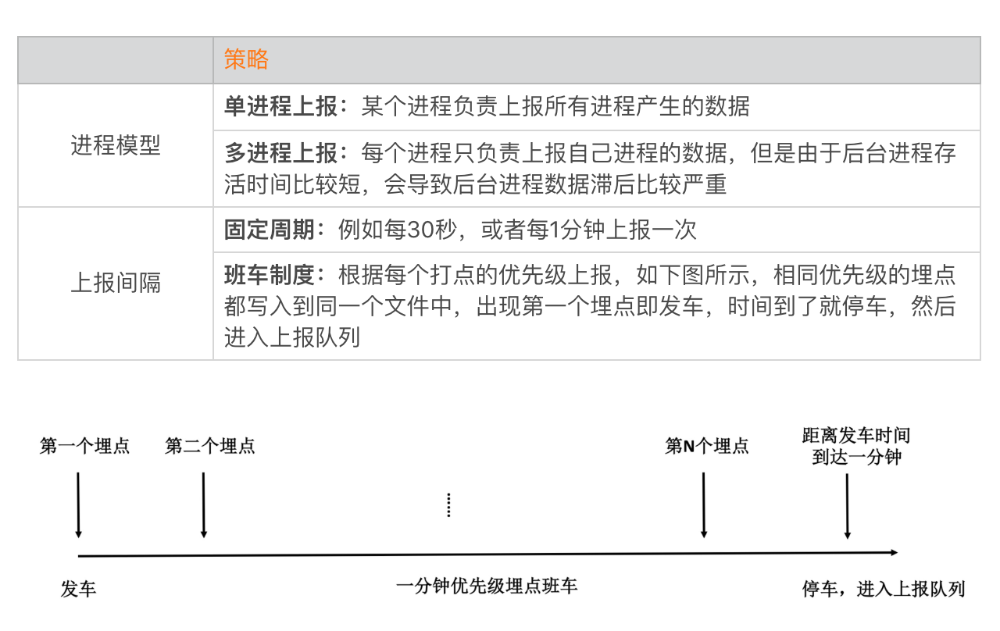
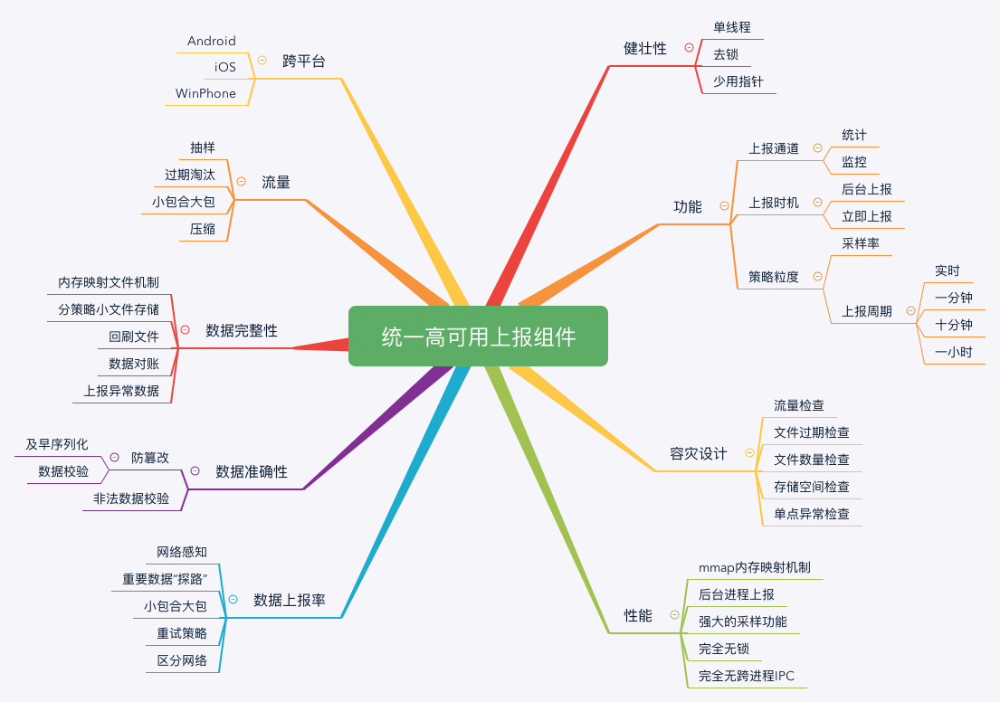

无论是“高效测试”中的实时监控，还是“版本发布”中的数据校验平台，我都多次提到了数据的重要性。
对于数据评估，我们的期望是“又快又准”。“快”，表示数据的时效性。我们希望在 1 小时内，甚至 1 分钟内就可以对数据进行评估，而不需要等上 1 天或者几天。“准”，表示数据的准确性，保证数据可以反映业务的真实情况，不会因为数据不准确导致做出错误的产品决策。
但是“巧妇难为无米之炊”，数据平台的准确性和时效性依赖客户端数据采集和上报的能力。那应该如何保证客户端上报组件的实时性和准确性？如何实现一个“高可用”的上报组件呢？
统一高可用的上报组件
可能有同学会疑惑，究竟什么是“高可用”的上报组件？我认为至少需要达到三个目标：
-
数据不会丢失。数据不会由于应用崩溃、被系统杀死这些异常情况而导致丢失。
-
实时性高。无论是前台进程还是后台进程，所有的数据都可以在短时间内及时上报。
-
高性能。这里主要有卡顿和流量两个维度，应用不能因为上报组件的 CPU 和 I/O 过度占用导致卡顿，也不能因为设计不合理导致用户的流量消耗过多。
但是数据的完整性、实时性和性能就像天平的两端，我们无法同时把这三者都做到最好。因此我们只能在兼顾性能的同时，尽可能地保证数据不会丢失，让上报延迟更小。
在“网络优化”中，我不止一次的提到网络库的统一。网络库作为一个重要的基础组件，无论是应用内不同的业务，还是 Android 和 iOS 多端，都应该用同一个网络库。
同理，上报组件也是应用重要的基础组件，我们希望打造的是统一并且高可用的上报组件。

一个数据埋点的过程，主要包括采样、存储、上报以及容灾这四个模块，下面我来依次拆解各个模块，一起看看其中的难点。

1. 采样模块
某些客户端数据量可能会非常大，我们并不需要将它们全部都上报到后台。比如说卡顿和内存这些性能数据，我们只需要抽取小部分用户统计就可以了。
采样模块是很多同学在设计时容易忽视的，但它却是所有模块中最为复杂的一项，需要考虑下面一些策略的选择。
大多数的组件采用的都是 PV 次数采样，这样的确是最简单的。但是我们更多是在性能数据埋点上采样，为了降低用户的影响面，我更加倾向于使用 UV 采样的方式。而且为了可以让更多的用户上报，我也希望每天都可以更换一批新的用户。
最终我选择的方案是“UV 采样 + 用户标识随机 + 每日更换用户”的方式，但是采样还需要满足三个标准。
-
准确性。如果配置了 1% 的采样比例，需要保证某一时刻只有 1% 的用户会上报这个数据。
-
均匀性。如果配置了 1% 的采样比例，每天都会更换不同的 1% 用户来上报这个数据。
-
切换的平滑性。用户的切换需要平滑，不能在用一个时间例如 12 点，所有用户同时切换，这样会导致后台数据不连贯。
实现上面这三个标准并不容易，在微信中我们采用了下面这个算法：
// id：用户标识，例如微信号、QQ 号id_index = Hash(id) % 采样率倒数time_index = (unix_timestamp / (24*60*60)) % 采样率倒数上报用户 =（id_index == time_index）每个采样持续 24 小时，使整个切换可以很平滑，不会出现所有用户同时在 0 点更换采样策略。有些用户在早上 10 点切换，有些用户在 11 点切换，会分摊到 24 小时中。并且从一个小时或者一天的维度来看，也都可以保证采样是准确的。
不同的埋点可以设置不同的采样率，它们之间是独立的、互不影响的。当然除了采样率，在采样策略里我们还可以增加其他的控制参数，例如：
-
上报间隔：可以配置每个埋点的上报间隔，例如 1 秒、1 分钟、10 分钟、60 分钟等。
-
上报网络：控制某些点只允许 WiFi 上传。
2. 存储模块
对于存储模块，我们的目标是在兼顾性能的同时，保证数据完全不会丢失。那应该如何实现呢？我们首先要思考进程和存储模式的选择。

业内最常见的上报组件是“单进程写 + 文件存储 + 内存缓存”，虽然这种方式实现最为简单，但是无论是跨进程的 IPC 调用堆积（IPC 调用总是很慢的）还是内存缓存，都可能会导致数据的丢失。
回顾一下在“I/O 优化”中，我列出的 mmap、内存与写文件的性能对比数据。

你可以看到 mmap 的性能非常不错，所以我们最终选择的是 “多进程写 + mmap”的方案，并且完全抛弃了内存缓存。不过 mmap 的性能也并不完美，它在某些时刻依然会出现异步落盘，所以每个进程 mmap 操作需要放到单独的线程中处理。

“多进程写 + mmap”的方案可以实现完全无锁、无 IPC 并且数据基本不会丢失，看上去简直完美，但是真正实现时是不是像图中那么简单呢？肯定不会那么简单，因为我们需要考虑埋点数据的聚合以及上报数据优先级。
-
埋点数据的聚合。为了减少上报的数据量，尤其是部分性能埋点，我们需要支持聚合上报。大部分组件都是使用上报时聚合的方式，但是这样无法解决存储时的数据量问题。由于我们使用的是 mmap，可以像操作内存一样操作文件中的数据，可以实现性能更优的埋点数据的聚合功能。
-
上报数据优先级。很多上报组件埋点时都会使用一个是否重要的参数，对于重要的数据采用直接落地的方式。对于我们的方案来说，已经默认所有的数据都是重要的。关于上报数据的优先级，我建议使用上报间隔来区分，例如 1 分钟、10 分钟或者 1 小时。

对于一些敏感数据，可能还需要支持加密。对于加密的数据，我建议使用单独的另一个 mmap 文件存储。
为什么上面我说的是数据基本不会丢失，而不是完全不会丢失呢？因为当数据还没有 mmap 落盘，也就是处于采样、存储内部逻辑时，这个时候如果应用崩溃依然会造成数据丢失。为了减少这种情况发生，我们做了两个优化。
-
精简处理逻辑。尽量减少每个埋点的处理耗时，每个埋点的数据处理时间需要压缩到 0.1 毫秒以内。
-
KillProcess 等待。在应用主动 KillProcess 之前，需要调用单独的函数，先等待所有队列中的埋点处理完毕。
3. 上报模块
对于上报模块，我们不仅需要满足上报实时性，还需要合理地优化流量的使用，主要需要考虑的策略有：

为了解决后台进程的上报实时性问题，我们采用了单进程上报的策略，我推荐使用保活能力比较强的进程作为唯一的上报进程。为了更加精细地控制上报间隔，我们采用更加复杂的班车制度模式。
后来经过仔细思考，最终的上报模块采用“多进程写 + 单进程上报”。这里有一个难点，那就是如何及时的收集所有已经停止的班车，会不会出现多进程同步的问题呢？我们是通过 Linux 的文件 rename 的原子性以及 FileObserver 机制，实现了一套完全无锁、高性能的文件同步模型。

每个进程在对应优先级的文件“停车”的时候，负责把文件 rename 到上报数据存放的目录中。因为 rename 是原子操作，所以不用担心两个进程会同时操作到同一个文件。而对应的上报进程只需要监听上报数据目录的变化，就可以实现文件状态的同步。这样就避免了多进程同步操作同一个文件的问题，整个过程也无需使用到跨进程的锁。
当然上报模块里的坑还有很多很多，例如合并上报文件时应该优先选择高优先级的文件；对于上报的包大小，在移动网络需要设置的比 WiFi 小一些，而不同优先级的文件需要合并组包，尽量吃满带宽；而且在弱网络的时候，我们需要把数据包设置得更小一些，先上报最高优先级的数据。
4. 容灾模块
虽然我们设计得上报模块已经很强大，但是如果使用者调用不合理，也可能会导致严重的性能问题。我曾经遇到过，某个同学在一个 for 循环连续埋了一百万个点；还有一次是某个用户因为长期没有网络，导致本地堆积了大量的数据。
一个强大的组件，它还需要具备容灾的能力，本地一般可以有下面这些策略。
容灾模块主要是保证即使出现开发者使用错误、组件内部异常等情况，也不会给用户的存储空间以及流量造成严重问题。
数据自监控
通过“多进程写 + mmap + 后台进程上报 + 班车模式”，我们实现了一套完全无锁、数据基本不会丢失、无跨进程 IPC 调用的高性能上报组件，并且通过容灾机制，它还可以实现异常情况的自动恢复。
那线上效果是不是真的这么完美？我们怎样确保上报组件的数据可靠性和时效性呢？答案依然是监控，我们需要建立一套完善的自监控体系，为后续进一步优化提供可靠的数据支撑。
1. 质量监控
上报组件的核心数据指标主要包括以下几个：
当然，如果我们追求更高的实时性，可以选择计算小时到达率，甚至是分钟到达率。
2. 容灾监控
当客户端出现容灾处理时，我们也会将数据单独上报到后台监控起来。
除了异常情况的监控，我们还希望将用户每日使用的移动流量和 WiFi 流量做更加细粒度的分区间监控，例如 0～1MB 的占比、1～5MB 的占比等。
总结
网络和数据都是非常重要的基础组件，今天我们一起打造了一款跨平台、高可用的上报组件。这也是目前比较先进的方案，在各方面的质量指标都比传统的方案有非常大的提升。

当然真正落实到编码，这里面还有非常多的细节需要考虑，也还有大大小小很多暗坑。而且虽然我们使用 C++ 实现，但是也还需要处理不同平台的些许差异，比如 iOS 根本不需要考虑多进程问题等。
在实践中我的体会是，当我们亲自动手去实现一个网络库或者上报组件的时候，才会深深体会到把一个新东西做出来并不困难，但是如果想要做到极致，那必然需要经过精雕细琢，更需要经过长时间的迭代和优化。
课后作业
你所在的公司，目前正在使用哪个数据上报组件？它存在哪些问题呢？欢迎留言跟我和其他同学一起讨论。
今天的课后作业是，在实现方案中我故意隐去了两个细节点，这里把它们当作课后作业留给你，请你在留言中写下自己的答案。
1. 采样策略的更新。当我们服务器采样策略更新的时候，如果不使用推送，怎样保证新的采样策略可以以最快速度在客户端生效？
2. 埋点进程突然崩溃。你有没有想到，如果 Process A 突然崩溃，那哪个进程、在什么时机、以哪种方式，应该负责把 Process A 对应的埋点数据及时 rename 到上报数据目录？
COMMUNITY NOTES
读者评论
1. 不使用推送，可以在每次上报的时候，把最新的策略作为响应返回给客户端，告诉客户端在什么时候改更新策略。2. 可以让上报进程来做，上报进程通过FileObserver 来监听每个进程日志文件的更改时间，如果指定时间内没有变化，则可以立马上报该进程的文件。
我相信大多数产品都有基本的埋点上报功能，但是估计自己研发一套高可用的上报组件的公司不是很多。工作两年多，我一直思考这种功能只有加入大公司的技术团队才有机会去做，还是发挥自己的积极主动性就能做出来。（客观说）感觉中小心公司一直是业务业务...基础架构投入不大，够用就行。我的疑惑哈，希望同行们解惑。
采样模块的算法有问题吧上报用户 =（id_index == id_index）？应该是id_index==time_index吧
对于采样策略的更新，可以在最新一次上报后带回，放入另一 FileObserver 中 ，Process A 获取使用；对于 Process A 的崩溃，要主进程来上报么？